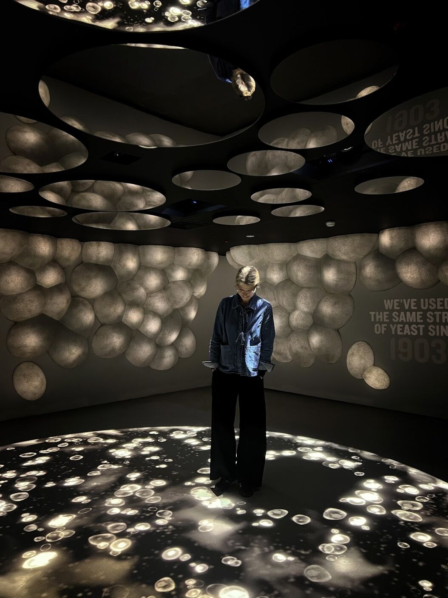

02 / Portfolio
Guinness Storehouse
Interactive Floor Experience in the Guinness Factory Tour
The Yeast Room is part of the Ingredients Experience at the Guinness Storehouse in Dublin — an immersive retelling of how Guinness stores and grows its unique yeast strain, first laid down in 1903. Visitors step into a circular projected petri dish of budding cells, with tracking that lets them move the particles as they walk, alongside lighting, fog, sound, and scent. I developed the real-time system that drives the interactive floor and lighting, built in TouchDesigner and Notch.
